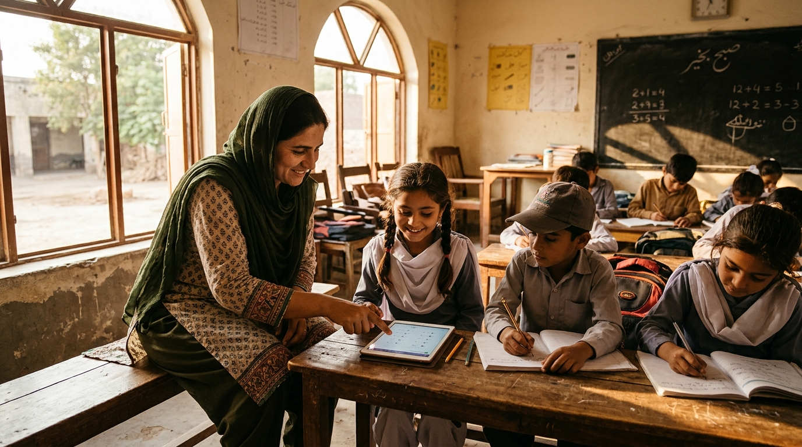

Courage and wisdom in service of children who wait.
Himat-Hikmat — courage and wisdom in Urdu — is the research framework behind Pakistan's most rigorous doctoral-grade investigation into public education inequality. Three years of Punjab field data. One unflinching argument for change.

Structural inequality — not teacher effort — drives learning deficiency. District resource allocation explains 68% of the variance in primary outcomes.
55% of government teachers report zero exposure to AI lesson tools; fewer than 12% use them consistently in classrooms.
Himat-Hikmat: Four Lenses. One Argument.
Structured around four analytical lenses addressing each systemic failure layer in Pakistan's public education system. All four converge on a single policy conclusion.
Structural Inequality
How resource allocation models at federal, provincial, and district level create systemic disadvantage that individual teacher effort cannot overcome — regardless of motivation or training.
Technology Readiness Gap
The delta between the curriculum's stated digital learning goals and the actual technological infrastructure and teacher competency available at the point of instruction in government schools.
Governance Accountability
How performance measurement and accountability chains in the provincial education bureaucracy create perverse incentives — where reported metrics diverge systematically from classroom reality.
Policy Translation
The gap between research evidence and legislative action in Pakistan's education sector — and the institutional design required to close that gap within a single provincial policy cycle.
Numbers from the actual classrooms.
Every statistic in this research was gathered through primary field visits, structured teacher interviews, and student assessment sampling across Lahore, Sheikhupura, and Gujranwala divisions — not government-reported aggregate data.
From Thesis to National Replication.
The Himat-Hikmat research is not designed to sit in a university archive. It is engineered to move — from doctoral defence to provincial legislation to national adoption within five years.
Designed as an actionable five-stage institutional cascade — translating primary doctoral classrooms metrics directly into provincial PPSC & BISE standards.
Primary Field Research
37,000+ children sampled. 200+ teacher interviews. GITTC Lahore cohort data collected. Regression models finalised. Doctoral thesis drafted and submitted for supervisor review.
Doctoral Defence & Publication
Thesis defence at University of Punjab under Dr. Imran Sabir. Peer-reviewed publication of primary findings. Policy brief prepared for Punjab Education Commission submission window.
Provincial Policy Submission
Formal submission to Punjab Education Department: AI literacy standards for new government school teacher appointments. Proposed integration into PPSC testing criteria and BISE curriculum review cycles.
Pilot Implementation
GITTC Lahore delivers first cohort under the new standard. Enlyst Education arm provides curriculum support. Outcome data collected for legislative case.
National Replication
Punjab model presented to Federal Education Ministry as replication template. HEC engagement for integration into pre-service teacher training nationwide.
Ring-fenced.
By design.
"The Foundation does not exist to make the business look good. It exists because the problem is real, the data is ours, and the obligation cannot be outsourced."
— Wasim Hassan, Founder · Enlyst Foundation
Every partnership
extends the reach.
Research partnerships, academic collaboration, grant funding, and policy inquiry — all welcome and reviewed personally.